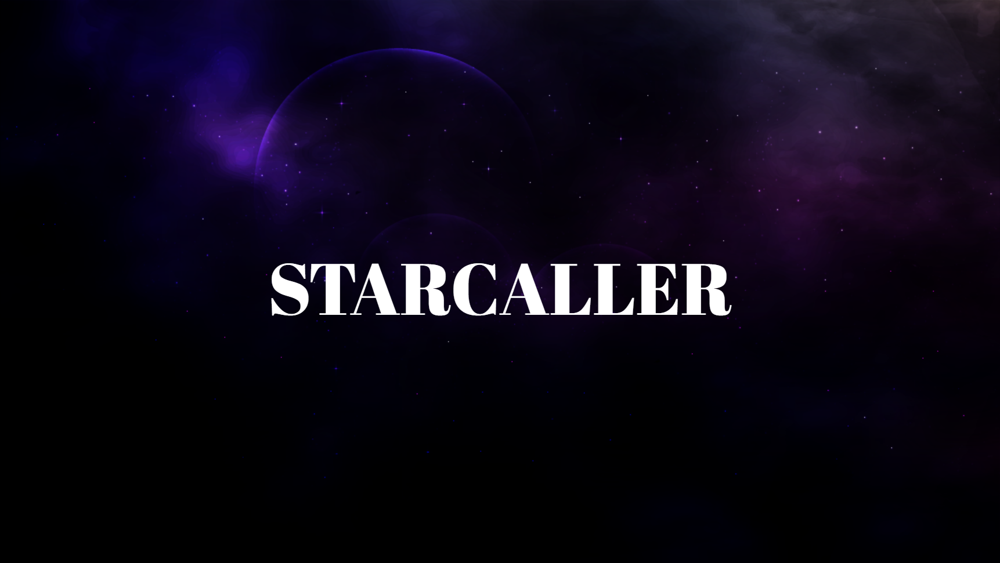
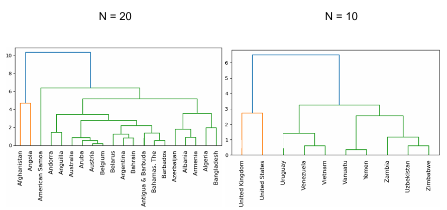

This is a VR rhythm game I made over the last summer for CS 579. The professor ranked it top 3 out of 84 projects in the class, the biggest class size ever! You can download it here and run it on your own device to give it a try.
I also have worked on several projects related to machine learning over the previous semester. Including but not limited to topics about:
The most difficult of the projects was the one on hierarchical agglomerative clustering on countries represented by 6-dimensional feature vectors.
| Year | Fav Class |
|---|---|
| Freshman | None :) |
| Sophomore | CS 579 |
| Junior | ??? (CS 272, right?) |